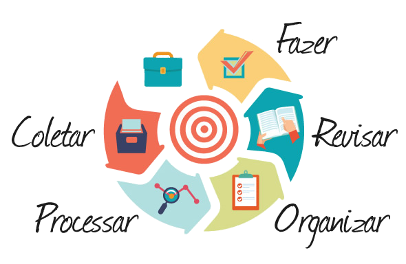

Método GTD para aumentar sua produtividade:
introdução:
O que é o método?
O método Get Things Done (GTD), criado por David Allen, é uma ferramenta de organização e
produtividade. Esse método é simples e efetivo, contendo apenas 5 etapas a serem seguidas, que, irão
fazer você gerenciar todas as suas tarefas com mais eficiência.
O GTD se pauta bastante em um conceito chamado mind like water, que é uma analogia feita com a frase "Be water, my friend.", dita
por Bruce Lee. Pois ao ter uma vida sobre controle, você terá uma vida com tranquilidade.
O objetivo principal do GTD é minimizar a ansiedade e o estresse ao mesmo tempo que maximiza
sua produtividade. Já que, nos dias de hoje estamos sempre com diversos compromissos e muitas vezes
acabamos deixando nossos objetivos de lado ao pensar "Depois eu faço isso" ou "Não tenho tempo agora",
procrastinando as nossas terefas, nos tornando improdutivos.
Esse método é como tocar um instrumento musical, precisa ser praticado para obter proeficiencia. Dessa
forma, tente praticar ele todo dia, e, com o tempo, você já aplicará ele de olhos fechados.
Como aplicar o método:

Como dito antes, esse método é dividido em 5 etapas. Elas formam um cliclo, já que, ao finalizar a quinta etapa voçê reçomeça tudo
1 Coletar:
O primeiro passo é o que vai assegurar que você realize o necessário. Você deve tirar tudo da sua cabeça
(tarefas, ideias, etc) e guardar em algum lugar
mais confiavél que sua memória, em uma agenda ou app para celular. Essa lista também é chamada de "Caixa de
entrada", já que, tudo que você pensa estará nela.
Normalmente tentamos guardar tudo em nossas mentes, sendo esse um dos motivos de não realizarmos nossos
desejos. Contudo,
o cérebro humano não é otimizado para armazenar informação, mas sim, para tomada de decisões.
Dessa forma, ao colocar todas as suas obrigações nessa caixa trará a você mais tranquilidade. Pois, você não
vai esquecer e logo que a informação estiver fora da cabeça,
é mais fácil descobrir o que fazer com ela.
2 Processar:
3 Organizar:
4 Revisar:
5 Engajar: